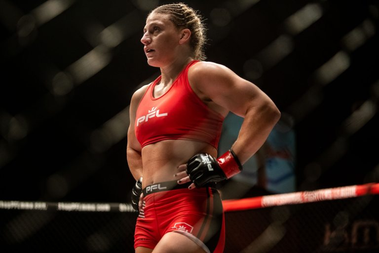
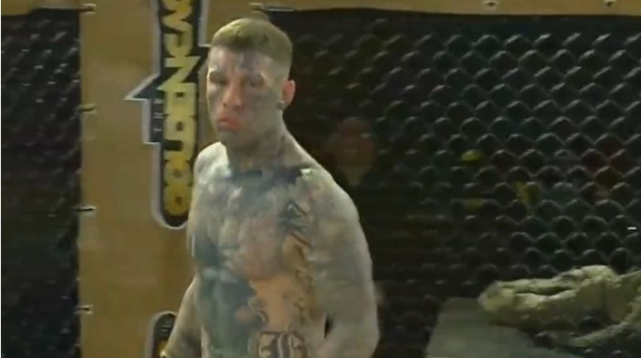
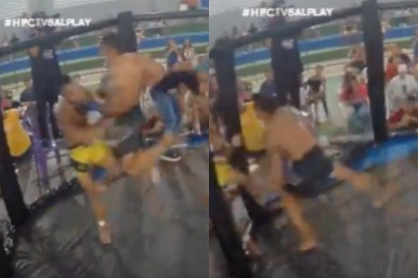
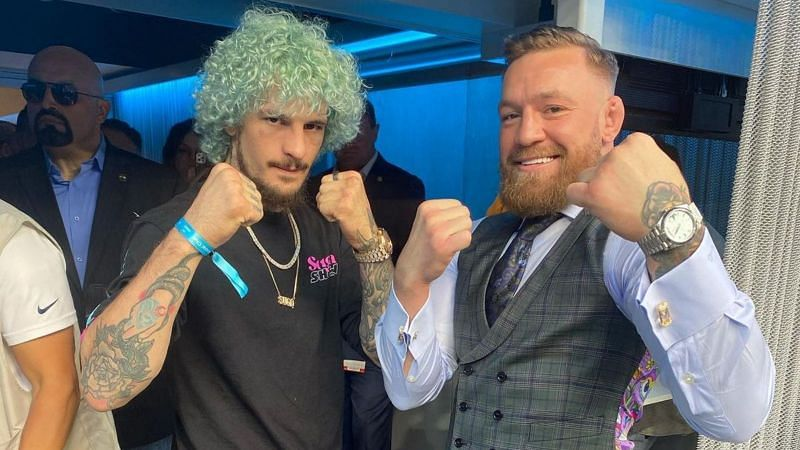
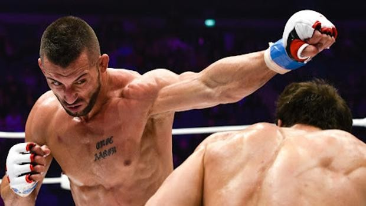

Charles Oliveira asegura que va noquear a Dustin Poirier en el primer round «Voy a sorprender al mundo una vez más»
Charles Oliveira asegura que va noquear a Dustin Poirier en el primer round «Voy a sorprender al mundo una vez más»
A solo días de uno de los mayores desafíos de su carrera, Charles Oliveira está confiado en hacer historia frente Dustin Poirier. En UFC 269, el brasileño aseguró que está listo para salir de su zona de confort. El experimentado grappler habló de noquear a su rival.
“Quiero ganar, no importa como. Creo mucho en el nocaut. El es bueno de pie y me gusta sorprender. Todos los tipos hablan en la división y ellos no hacen nada. Hablan que son monstruos, que noquearan, que lo harán suceder, lo hacen y el tipo no se dobla. Yo golpeo de izquierdazo y ellos caen, no se porque sucede eso. Como hable es algo diferente” explicó Oliveira, en entrevista con Combate.
La predicción de victoria frente uno de los mejores boxeadores de UFC no es todo. El brasileño inclusive reveló en qué momento pretende terminar la pelea frente el ex campeón interino de la división.
“Una cosa que hable en mi última pelea y hablaré de nuevo: El 11 de diciembre voy a sorprender al mundo, voy a ganarle a ese tipo en el primer round. El respeto es algo, así como respeto a los otros de la división, solo se que hoy, con lo que está sucediendo, tengo algo más que ellos. Voy a sorprender al mundo una vez más”, concluyó.
Dispuesto a hacer historia y asumir la posición del mayor ligero de la historia. Charles también mandó un mensaje al resto de la división. Campeón de una de las divisiones más explosivas de las MMA, el brasileño ya demostró en más de una ocasión con hechos y no con palabras.

Dana White desvela interés en firmar a Kayla Harrison: «Ven aquí y pelea con la mejor de todos los tiempos»
Es oficial: la UFC se ha unido a la puja por hacerse de los servicios de Kayla Harrison.
Desde completar su contrato con PFL ganando el torneo 2021 de las Pesos Livianas – y un cheque por $1 millón de dólares -, Harrison, medallista olímpica, ha estado en la mira de promociones de MMA y hasta de lucha libre profesional. Pero no ha sido sino hasta ahora que Dana White ha hecho público su interés en reclutar a la peleadora invicta de American Top Team.

EX traficante de drogas convertido en peleador de MMA noquea sin chocar guantes a su oponente en 7 segundos (video).
El peleador de MMA italiano Walter Pugliesi, ex traficante de drogas, no perdió el tiempo en el evento ‘Golden Cage’ del sábado en Italia, despachando a su oponente temprano con un impresionante KO de rodilla voladora.

Impactante | Lo saca de la jaula de un rodillazo (Video).
En una pelea de un evento regional en Santa Luzia-PA el sábado pasado hubo un final aterrador, que, afortunadamente, no fue peor.
En Home Fight Championship 3, el peleador Diogo «Galo» Lopes se cayó de la jaula luego de sufrir una rodillazo volador de Romero Reis. A pesar de haber caído desde una pequeña altura sobre el hormigón, Galo no sufrió más lesiones graves por suerte.

Sean O’Malley opina del aumento de peso de Conor McGregor: «No sé si es una ventaja»
Conor McGregor ha subido notablemente de peso desde su trilogía con Dustin Poirier en julio. Entonces estaba en 155 libras, ahora en 190. Él mismo ha estado mostrando en redes sociales su notable cambio de aspecto.
El irlandés está dando mucho que hablar y recientemente, en The Timbo Sugar Show, ha dado su opinión Sean O’Malley. El peso gallo de UFC no tiene claro si su aumento de peso es beneficioso para «The Notorious».
“No creo que eso sea necesariamente bueno para pelear, amigo. No creo que eso sea una ventaja o un beneficio. Amigo, si Conor pesa 190 (libras) en este momento, no debería bajar y pelear en las 155«.
O’Malley también bromeó:
«Ahora mira cómo lo hace, rápido como el demonio y mejor que nunca también«.

Enoc Solves, antes de disputar el cinturón de Eagles FC: «Nuestras facturas las pagan los euros, no el nombre de la empresa»
Durante mucho tiempo, todas las miradas apuntaban a un mismo atleta cuando se hablaba del mejor luchador de España de artes marciales mixtas (MMA). El consenso era la tendencia dominante en lo que respectaba a comandar el ranking libra por libra de esta disciplina en aquel momento: Enoc Solves se escuchaba al unísono. Con el tiempo, fueron surgiendo nuevas figuras que han relegado al valenciano a un segundo plano, pero siempre ha estado ahí. Ahora, a sus 37 años, recibe la mejor oportunidad de su vida: disputará este viernes el cinturón del peso medio de Eagles FC, la compañía que encabeza el excampeón de UFC, que se retiró invicto, Khabib Nurmagomedov.
«Desde que me fui a Estados Unidos tuve una parada por la pandemia.